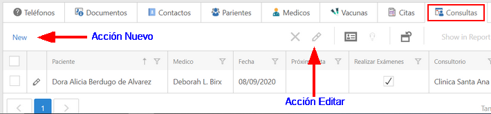
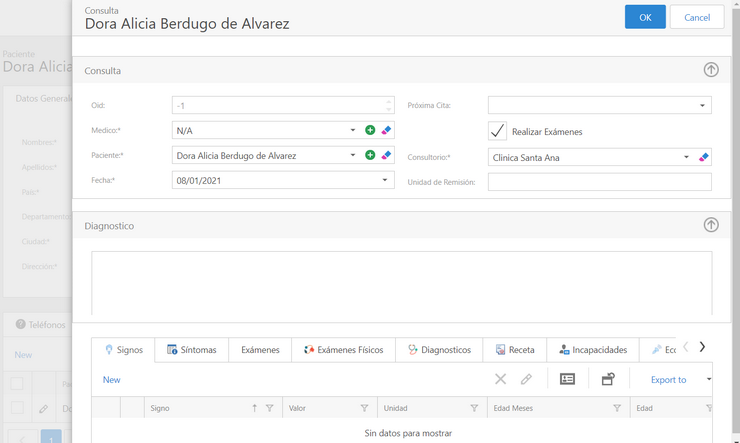
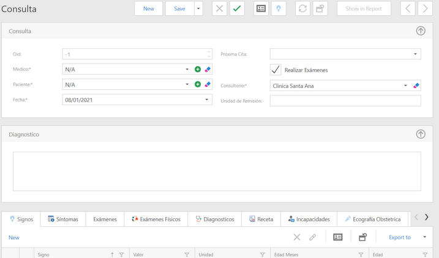

|
<< Click to Display Table of Contents >> Navigation: Salud > Consulta Medica |
Para agregar o dar mantenimiento a las Consultas Medicas, puede hacerlo de dos formas:
1.Ir al expediente del paciente, ponerlo en edición y agregar la consulta en la pestaña Consultas
2.Ir a la opción Consultas del menú Salud y agregar allí la consulta
Sí desea agregar una consulta desde el expediente del paciente, los pasos son:
1.Editar el Expediente Médico. Los pasos están aquí
2. Ir a la pestaña Consultas
3.Para agregar una nueva consulta, dar clic en la acción New (Nuevo)

4.Se despliega formulario en ventana Popup con formulario vacío para el ingreso de la consulta

5.Ingresar los datos solicitados. Sí la caja de texto Diagnostico no se muestra, dar clic en el botón Expandir para mostrarla.
6.Ingresar los detalles de la consulta que apliquen.
7.Clic en la acción OK, para cerrar el formulario y regresar al expediente. El sistema ejecuta las validaciones que se aplican a los datos ingresados y si fallan debe corregirlos para poder continuar. Otra opción es dar Cancelar y abortar cualquier cambio.
8.Validar el expediente del paciente.
9.Guardar el expediente.
Para agregar una consulta sin pasar por el Expediente del Paciente, los pasos son los siguientes:
1.Ir al menú Salud
2.Seleccionar la opción Consulta
3.Clic en la acción New (Nuevo).

4.Ingresar los datos de la consulta en el formulario.
5.Despues de ingresar los datos generales de la consulta, puede ejecutar la acción de validación para verificar que se cumple con las reglas.
6.Sí la validación falla, hacer los cambios correspondientes.
7.Ingresar los datos disponibles para los detalles.
8.Ejecutar la acción de validar. Sí una o más reglas de validación no se cumplen, debe hacer los cambios correspondientes.
9.Guardar la consulta
La edición de una consulta se puede hacer por las dos vías expuestas y es un procedimiento similar, excepto que necesitará crear un filtro para obtener la Consulta que desea modificar.
Ver además
Expediente de Pacientes - Agregar
Expediente de Pacientes - Editar